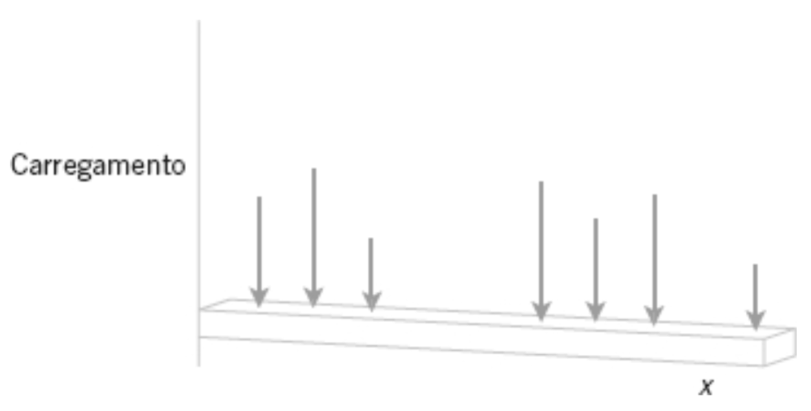
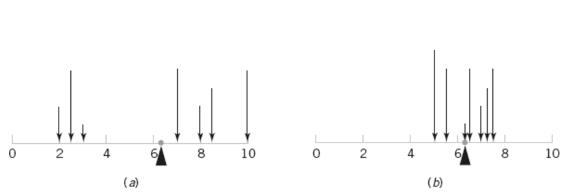

A distribuição é o que se reaproveita
Do resultado do experimento a um número, e daí à distribuição, à acumulada F(x) e aos dois números que a resumem.
O que é uma variável aleatória
Uma função que leva o resultado do experimento a um númeroWe are given an experiment specified by the space S (or Ω), the field of subsets of S called events, and the probability assigned to these events. To every outcome ξ of this experiment, we assign a number x(ξ). We have thus created a function x with domain the set S and range a set of numbers. This function is called random variable if it satisfies certain mild conditions to be soon given. Papoulis & Pillai
A random variable is a number x(ξ) assigned to every outcome ξ of an experiment. This number could be the gain in a game of chance, the voltage of a random source, the cost of a random component, or any other numerical quantity that is of interest in the performance of the experiment. Papoulis & Pillai
O Papoulis usa a forma x(ξ) ou x, deixando visível que é uma função do resultado. O Montgomery usa simplesmente X.
Vamos seguir o Montgomery, mas vale ter em mente o que a notação do Papoulis lembra: X não é um número, é uma regra que atribui um número a cada resultado.
A analogia da viga
Suponha que um carregamento em uma viga longa e delgada coloque massa somente em pontos discretos. O carregamento pode ser descrito por uma função que especifica a massa em cada um desses pontos.

Modelando: qual é a faixa?
Antes de atribuir probabilidades, decidir quais valores são possíveisPara cada enunciado a seguir, determine a faixa — o conjunto de valores possíveis da variável aleatória. É o primeiro passo de qualquer modelagem: sem a faixa, não há o que somar.
Pergunte-se sempre duas coisas: qual o menor valor possível? e o que impede de crescer para sempre? A resposta da segunda é o que separa faixa finita de infinita contável.
Exercício 3.1 · itens 1 a 4
Exercício 3.1 · itens 5 a 8
Faixa finita quando existe um teto físico: o número de conexões da placa (3.1.1), o tamanho da amostra (3.1.2), o total de pessoas ou nucleotídeos (3.1.6, 3.1.7), os minutos do expediente (3.1.8) — e, no caso mais interessante, o pior caso de uma busca sem reposição (3.1.3).
Faixa infinita contável quando nada limita por cima: ciclos de processamento (3.1.4) e falhas na superfície (3.1.5). Continua discreta — é o mesmo caso das pastilhas que veremos no § 04.
Distribuições de probabilidade
A mesma distribuição serve a domínios diferentesA ideia é que podemos reusar a distribuição com que uma variável aleatória se apresenta em um experimento para um outro domínio, ou outro sistema físico. Reusamos as propriedades e características — por isso é importante entender distribuições conhecidas, como a gaussiana, a uniforme, a hipergeométrica, entre outras.
Distribuição de probabilidades de uma variável aleatória X é uma descrição das probabilidades associadas aos valores possíveis de X.
Para uma variável aleatória discreta, a distribuição é frequentemente especificada por apenas uma lista de valores possíveis, juntamente com a probabilidade de cada um.
Na aula 01 o paradoxo de Bertrand terminou sem fechamento: três métodos de sortear a corda davam 1/4, 1/3 e 1/2, e ficou dito que cada um correspondia a uma distribuição de probabilidade diferente.
É esse o conceito que começa agora. A distribuição é o que faltava para dizer com precisão qual mecanismo aleatório está em jogo.
Funções de probabilidade
Três condições — e nenhuma delas é decorativaPara uma variável aleatória discreta X, com valores possíveis x1, x2, ⋯, xn, a função de probabilidade é uma função tal que:
- f(xi) ≥ 0
- n ∑ i=1 f(xi) = 1
- f(xi) = P(X = xi)
As três condições são os axiomas de Kolmogorov (aula 01, § 08) reescritos para uma variável: 1 é A2, 2 é A1 aplicado ao espaço todo, e 3 é o que liga a função de volta a eventos — o que permite usar A3 para somar.
Seja a variável aleatória X o número de pastilhas de semicondutores que necessitam ser analisadas, de modo a detectar uma grande partícula de contaminação. Considere que a probabilidade de uma pastilha conter uma grande partícula seja 0,01 e que as pastilhas sejam independentes. Determine a distribuição de probabilidades de X.
Montando o espaço amostral
Seja p uma pastilha em que uma grande partícula esteja presente, e a uma pastilha em que ela esteja ausente. O espaço amostral é infinito: todas as sequências que começam com um conjunto de a’s e terminam com p.
Temos P(p) = 0,01 ⟹ P(a) = 1 − 0,01 = 0,99. Pelos casos iniciais, usando independência:
Podemos induzir que
Verificando as duas primeiras condições
A condição 1 é imediata: f(x) = P(X = x) ≥ 0 para todo x ∈ ℤ⁺, por ser produto de números positivos.
Para a condição 2:
Fazendo k = x − 1, sobra uma série geométrica de razão r = 0,99. Como |r| < 1, a série converge para 1/(1 − r):
O experimento aleatório aqui tem um número ilimitado de resultados, mas ele pode ser convenientemente modelado com uma variável aleatória discreta com uma faixa infinita contável.
Essa é a distribuição geométrica: “quantas tentativas até o primeiro sucesso”. É o primeiro caso do reaproveitamento anunciado no § 03 — o mesmo modelo serve para tentativas até a primeira falha de um componente, até o primeiro pacote perdido numa rede, até o primeiro bit com erro.
Funções de distribuição cumulativa
Somar é legítimo porque os eventos são excludentesEm geral, para qualquer variável aleatória com valores possíveis x1, x2, ⋯, xn, os eventos {X = x1}, {X = x2}, … são mutuamente excludentes — e é o axioma A3 que autoriza somar.
A função de distribuição cumulativa de uma variável aleatória discreta X, denotada por F(x), é:
A tabela mostra a profundidade típica (arredondada para o pé mais próximo) para poços sem falhas em formações geológicas no Condado de Baltimore. Seja X a profundidade de um poço sem falhas escolhido aleatoriamente. Determine a função distribuição cumulativa de X.
Fonte: The Journal of Data Science, 2009, Vol. 7, pp. 111–127.
| Grupo da formação geológica | Poços sem falhas | Profundidade (pés) |
|---|---|---|
| Gnaisse | 1.515 | 255 |
| Granito | 26 | 218 |
| Xisto Loch Raven | 3.290 | 317 |
| Mineral de silicato | 349 | 231 |
| Mármore | 280 | 267 |
| Xisto | 1.343 | 255 |
| Outros xistos | 887 | 267 |
| Serpentina | 36 | 217 |
| Total | 7.726 | — |
Passo 1 — as probabilidades pontuais
Cada profundidade recebe a razão entre os poços com aquela profundidade e o total. Atenção: formações diferentes compartilham a mesma profundidade — elas precisam ser somadas antes.
| x (pés) | Poços que contribuem | Nº | f(x) | F(x) |
|---|---|---|---|---|
| 217 | Serpentina | 36 | 0,0047 | 0,0047 |
| 218 | Granito | 26 | 0,0034 | 0,0080 |
| 231 | Mineral de silicato | 349 | 0,0452 | 0,0532 |
| 255 | Gnaisse + Xisto | 2.858 | 0,3700 | 0,4231 |
| 267 | Mármore + Outros xistos | 1.167 | 0,1511 | 0,5742 |
| 317 | Xisto Loch Raven | 3.290 | 0,4259 | 1,0000 |
Passo 2 — a função em degraus
F é não decrescente, dá um salto de exatamente f(xi) em cada valor possível, e é constante entre eles — o gráfico é uma escada, não uma curva. O maior salto está em 317 pés, refletindo o peso do Xisto Loch Raven no total.
O salto é a probabilidade pontual. Guardar isso agora evita a confusão clássica quando chegarmos às variáveis contínuas, em que P(X = x) = 0 e a escada vira curva.
Média e variância
Resumir a distribuição inteira em dois númerosDois números são frequentemente usados para resumir uma distribuição de probabilidades de X. A média é uma medida do centro ou meio da distribuição; a variância, uma medida da dispersão ou variabilidade.
Duas distribuições diferentes podem ter a mesma média e a mesma variância. São resumos simples e úteis — não substituem a distribuição.
Se X é uma variável aleatória discreta com função de probabilidade f(x), o valor esperado de qualquer função h(X) é:
Aplicando na média
Com h(x) = x, temos o valor esperado conhecido como média (μ):
Ou seja: a média é uma média ponderada pela função de probabilidade. No caso trivial de n valores igualmente prováveis, f(xi) = 1/n, e
que é a média aritmética conhecida.
A média como ponto de equilíbrio
Voltando à viga: se as probabilidades são massas, a média é o ponto onde a viga equilibra.

Aplicando na variância
Queremos medir o distanciamento da média. Para um valor x, esse distanciamento é x − μ. Mas precisamos evitar que um desvio positivo compense um negativo — por isso elevamos ao quadrado: h(x) = (x − μ)².
No caso trivial de valores igualmente prováveis, recai na forma conhecida:
Para preservar a unidade da variável — que fica ao quadrado na variância: σ = √V(X).
Uma inspeção visual numa localização das pastilhas de um processo de fabricação de semicondutores resultou na tabela abaixo. As pastilhas são independentes quanto às partículas contaminadas, e são selecionadas até que uma com cinco ou mais partículas ocorra. Calcule a média e a variância de X.
| Número de partículas contaminadas | Proporção de pastilhas |
|---|---|
| 0 | 0,30 |
| 1 | 0,20 |
| 2 | 0,15 |
| 3 | 0,10 |
| 4 | 0,05 |
| 5 ou mais | 0,20 |
A tabela serve só para extrair uma probabilidade: a de a pastilha ter 5 ou mais partículas, p = 0,20. Como as pastilhas são independentes e paramos na primeira que satisfaz, X é a mesma geométrica do § 04:
Somando as séries (ou usando os resultados da geométrica, μ = 1/p e V = (1−p)/p²):
μ = 1/0,20 = 5 pastilhas · V(X) = 0,80/0,04 = 20 · σ = √20 ≈ 4,47
Leitura: em média inspecionam-se 5 pastilhas até achar uma bem contaminada, mas o desvio padrão é quase igual à média — a geométrica é bem espalhada, e não é raro precisar de muito mais que 5.
Algumas distribuições
O reaproveitamento do § 03, agora com nomeCom f(x), F(x), μ e σ² definidos em geral, o passo seguinte é catalogar as distribuições que aparecem com mais frequência — cada uma com seu mecanismo gerador característico.
- Discreta uniforme — todos os valores igualmente prováveis.
- Binomial — número de sucessos em n tentativas independentes.
- Geométrica e binomial negativa — tentativas até o primeiro (ou o r-ésimo) sucesso. Já a encontramos duas vezes hoje.
- Hipergeométrica — amostragem sem reposição; é o caso do silo da aula 01.
- Poisson — contagens em um intervalo de tempo ou espaço.
Esta parte entra na próxima versão da aula. Repare que duas delas já apareceram naturalmente antes de terem nome — é o argumento do § 03 se cumprindo.